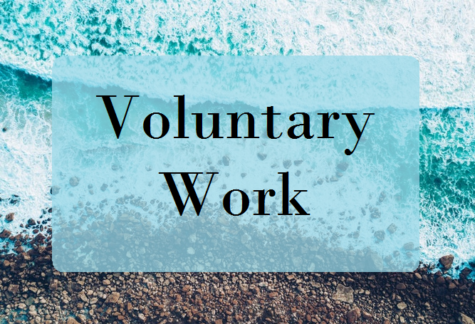

Nightline Association
Nightline is a emotional support service led by students for students. I chose to contribute to this as this is a small scale version of what I would like to do in the future.
Nightline is a emotional support service led by students for students. I chose to contribute to this as this is a small scale version of what I would like to do in the future.